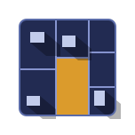

Un bloc carré de parcelles cadastrales sur fond gris, contour foncé, ta parcelle en ambre, et les ombres des bâtiments voisins qui débordent du carré. Coins légèrement arrondis, centré dans le canvas, exporté en SVG.
Veriterra
Veriterra
Fichier SVG exporté

assets/veriterra-mark.svg
assets/veriterra-mark-dark.svg
Coins arrondis (rx 8), fond transparent, bloc carré centré, ombres comprises dans le canvas. Prêts pour favicon, app icon et exports.